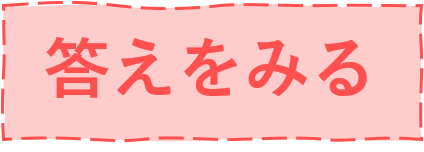

以下の質問に答えてね
クイズ①
次の（ ）にあてはまる言葉を選んでください。
脚が短いと思われていますが、実際には体内の皮下脂肪の内側で( )させています。
脚を屈折
脚を直立
脚を伸縮
クイズ②
次の（ ）にあてはまる言葉を選んでください。
飛翔能力を失い、水中での遊泳に使われる特殊な翼を( )といいます。
ペリッパー
トリッパー
フリッパー
クイズ③
次の（ ）にあてはまる言葉を選んでください。
氷上や砂浜などで腹ばいになって滑ることを( )といいます。
トベナン
ドカベン
トボガン
クイズ④
次の（ ）にあてはまる言葉を選んでください。
コウテイペンギンは、( )の中で繁殖するため、世界で最も過酷な子育てをする鳥と言われます。
−60℃
−90℃
−120℃
クイズ⑤
次の（ ）にあてはまる言葉を選んでください。
ゴミの投棄や( )流出など、様々な海洋汚染がペンギンの脅威となっています。
下水
石油
化学薬品
クイズ⑥
次の（ ）にあてはまる言葉を選んでください。
動物園や水族館での飼育が多くなり、現在世界で飼われているペンギンの( )が日本にいると言われています。
1/2
1/4
2/5
